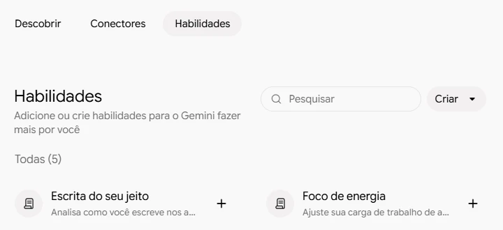
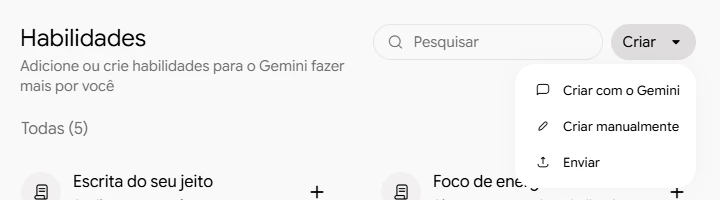
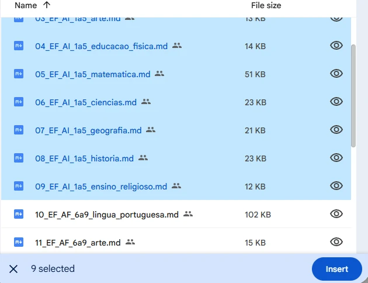
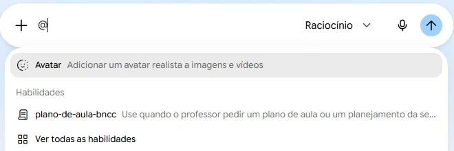
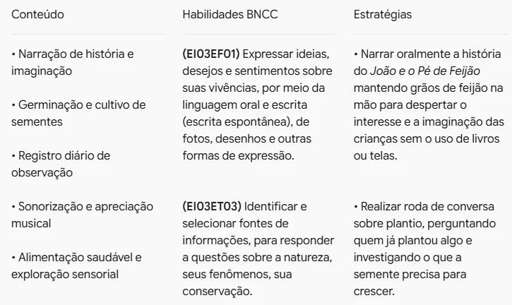
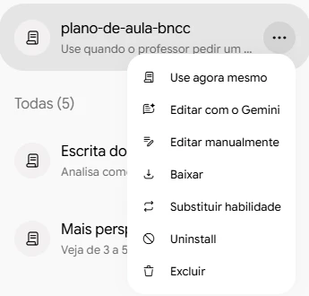

Criar um assistente de planos de aula
Guarde no Gemini os arquivos da BNCC e o jeito de montar o plano. Depois, peça o plano da semana em uma mensagem só
@plano-de-aula-bnccIdeias pra semana do Pré I. Na segunda, a história do João e o Pé de Feijão e o feijão no algodão…
o assistente abre o arquivo da BNCCEI03ET02Observar e descrever mudanças em diferentes materiais, resultantes de ações sobre eles…
EI03EF09Levantar hipóteses em relação à linguagem escrita, realizando registros de palavras e textos…
Ideias pra semana do Pré I lá na escola…
suas ideiasTransforme essas ideias em um plano de aula semanal estruturado em Dia, Conteúdo, Habilidades BNCC e Estratégias. Pesquise as habilidades da BNCC no arquivo anexo…
repetir toda vez@plano-de-aula-bncc
chamar o assistenteIdeias pra semana do Pré I lá na escola…
suas ideiasVeja o que vai mudar
- Interativo: toque nos botões para comparar as duas mensagens.
- No tópico 4, cada plano pedia três coisas: anexar o arquivo da BNCC, contar suas ideias e repetir a instrução.
- O assistente guarda o arquivo e a instrução. Sobra só o que muda de uma semana para outra: suas ideias.
- No Gemini, esse recurso se chama Habilidades. Não confunda com as habilidades da BNCC: é uma tarefa que o Gemini aprende a fazer do seu jeito.

Abra as Habilidades
- Abra o Gemini com a conta @educa, a mesma em que você criou o atalho da BNCC no tópico 4.
- No menu à esquerda, clique em Personalizar. No alto da página, escolha a aba Habilidades.
- A lista traz habilidades prontas do Google. A sua vai aparecer aqui também.

Escolha Criar manualmente
- Clique em Criar e depois em Criar manualmente.
- Abre um formulário com três campos: nome, descrição e instruções. Você vê e controla tudo o que o assistente vai seguir.
- Criar com o Gemini monta o assistente numa conversa, mas cada vez de um jeito. Fique no formulário para seguir este tutorial.
Use quando o professor pedir um plano de aula ou um planejamento da semana para a Educação Infantil ou para o 1º ao 5º ano. Transforma as ideias do professor em um plano organizado por dia, com conteúdo, habilidades da BNCC conferidas nos arquivos anexos e estratégias.
Dê nome e descrição
- Em Nome, digite Plano de aula BNCC. O Gemini troca por plano-de-aula-bncc, sem espaço nem maiúscula. É por esse nome que você vai chamar o assistente.
- Em Descrição, cole o texto ao lado.
- A descrição é a etiqueta do assistente: é por ela que o Gemini sabe quando usá-lo. Diga para que serve e em que situação.
Você ajuda professores da Rede Municipal de Pindamonhangaba a transformar as ideias que eles têm para a semana em um plano de aula organizado. ETAPA 1 — ESCOLHA O ARQUIVO DA BNCC Descubra pela turma qual arquivo anexo usar: - Berçário, Maternal, Pré I e Pré II são Educação Infantil: use o arquivo 01-ei-educacao-infantil.md. Berçário usa as habilidades EI01 (bebês), Maternal usa EI02 (crianças bem pequenas), Pré I e Pré II usam EI03 (crianças pequenas). - Do 1º ao 5º ano, use o arquivo de cada componente trabalhado: 02-ef-ai-1a5-lingua-portuguesa.md, 03-ef-ai-1a5-arte.md, 04-ef-ai-1a5-educacao-fisica.md, 05-ef-ai-1a5-matematica.md, 06-ef-ai-1a5-ciencias.md, 07-ef-ai-1a5-geografia.md, 08-ef-ai-1a5-historia.md ou 09-ef-ai-1a5-ensino-religioso.md. Se o plano junta componentes, use os arquivos de todos eles. Escolha só habilidades do ano da turma ou de um bloco que inclua esse ano (por exemplo, EF15 vale do 1º ao 5º ano; EF35, do 3º ao 5º). - Se não estiver claro qual é a turma, pergunte antes de escrever o plano. ETAPA 2 — LEIA O ARQUIVO E COPIE AS HABILIDADES Antes de escrever o plano, leia o arquivo escolhido. Não confie na memória: a BNCC tem habilidades parecidas e é fácil trocar uma pela outra. No arquivo, procure as habilidades que combinam com cada atividade. Copie o código e a descrição exatamente como estão no arquivo, palavra por palavra. Não invente códigos, não resuma e não reescreva a descrição. Se não encontrar uma habilidade adequada no arquivo, diga isso. ETAPA 3 — MONTE O PLANO Organize o plano em uma tabela com quatro colunas: Dia, Conteúdo, Habilidades BNCC e Estratégias. - Na coluna Habilidades BNCC, escreva cada habilidade com o código entre parênteses seguido da descrição completa, copiada do arquivo. Nunca só o código. - Siga as ideias do professor, na ordem em que ele contou. Não acrescente atividades que ele não mencionou. - Em Estratégias, descreva de forma concreta como cada atividade vai acontecer. - Dia sem aula aparece na tabela com o motivo. - Atividades que se repetem todos os dias (rotina) ficam num quadro separado, antes da tabela. - Se tiver sugestões para melhorar o plano, coloque no máximo três, separadas, no fim. - Entregue um único plano. Não repita o plano em outro formato. ETAPA 4 — FECHE COM A LISTA PARA CONFERIR No fim, liste todos os códigos usados, um por linha, para o professor conferir no arquivo. Escreva em português do Brasil, com a linguagem do dia a dia da escola.
Cole as instruções
- Copie o texto ao lado e cole em Instruções. É o jeito de fazer que você repetia a cada plano, agora escrito uma vez só.
- A etapa 1 ensina o assistente a escolher o arquivo certo pela turma: Pré I usa o arquivo 01; um plano de Matemática do 3º ano usa o 05.
- "Não confie na memória" está ali por causa do nosso teste: sem essa frase, o Gemini escreveu as habilidades de cabeça e errou.
- Sua escola usa outras colunas? Troque a lista da etapa 3 pelas do seu modelo.

Anexe a BNCC e crie
- No alto do formulário, clique em Adicionar arquivos e depois em Google Drive.
- Na aba Meu Drive, abra o atalho BNCC_por_componente. Clique no arquivo 01, segure Shift e clique no 09: os nove ficam marcados.
- Clique em Insert, depois em Enviar e, por fim, em Criar. O assistente aparece em Instalado.
- O Gemini guarda uma cópia dos arquivos dentro do assistente. Você não precisa anexá-los de novo.
Não tem o atalho no Meu Drive? Crie seguindo o passo a passo de Usando a BNCC como fonte, do tópico 4.

Chame o assistente
- Abra uma conversa nova. Na caixa de pedido, digite @.
- Em Habilidades, clique em plano-de-aula-bncc. O nome entra na caixa.
- Logo depois, escreva ou dite as ideias da semana, do jeito que contaria a uma colega. Sem anexo e sem instrução de formato.
- No exemplo, as mesmas ideias do Pré I do tópico 4: feijão no algodão, letra F e 7 de Setembro.

Leia o plano
- O plano vem na tabela Dia, Conteúdo, Habilidades BNCC e Estratégias, como no tópico 4.
- Cada habilidade traz o código e a descrição completa, copiados do arquivo.
- A rotina fica num quadro à parte, a sexta aparece como dia sem aula e, no fim, vem a lista dos códigos para conferir.
Na respostaComunicar suas necessidades, desejos, sentimentos e preferências, adotando hábitos de autocuidado…
No arquivoComunicar suas ideias e sentimentos a pessoas e grupos diversos.
Na respostaObservar e descrever mudanças em diferentes materiais, resultantes de ações sobre eles, em experimentos envolvendo fenômenos naturais e artificiais.
No arquivoIgual, palavra por palavra.
Confira as habilidades
- Escolha duas ou três habilidades da lista final. Abra o arquivo no atalho do Drive e procure o código com Ctrl + F.
- O texto tem de ser o mesmo. No primeiro teste, antes da regra "leia o arquivo", o Gemini inventou a descrição da EI03EO04.
- Com a instrução final, conferimos todas as habilidades de dois planos completos: todas iguais ao arquivo.
O assistente reduz muito o erro, mas não o elimina. Quem assina o plano é você: confira antes de lançar.

Ajuste quando sair torto
- Algo saiu diferente do que você queria? Volte a Personalizar › Habilidades, clique nos três pontos do assistente e em Editar manualmente.
- Acrescente uma regra às instruções e salve. Foi assim que chegamos ao texto deste tutorial: "Nunca só o código" e "Não confie na memória" vieram de testes que deram errado.
- Pronto: o plano que no tópico 4 pedia anexo e instrução agora sai com uma mensagem, toda semana. A conferência das habilidades continua sendo sua, a cada plano.